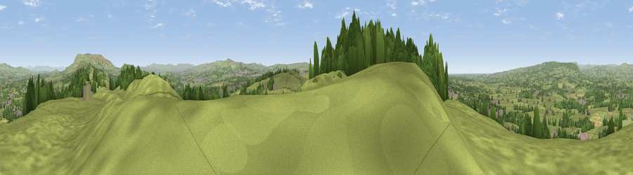

Viewpoint near Billington
#9338 in England · top 16% of its area beats it · near BillingtonThe view, rendered

A 360° render of this exact spot computed from the terrain model, tree cover and land cover — summer colours, afternoon light, calibrated against photographs of famous viewpoints. Real trees, hedges and buildings will differ in detail.
The panorama
Grey silhouette: terrain skyline in each direction (720 bearings, Earth curvature and refraction included). Dashed green: skyline with trees (+15 m) and buildings (+8 m) as obstacles. Blue strip: how far the ground is visible on each bearing.
Where the view opens
Wedge length = distance to the farthest visible ground on that bearing (vegetation-aware). Rings at 10, 25 and 50 km.
What fills the view
74% grassland · 20% woodland · 5% built-up · 1% cropland
Angular shares of the visible panorama (visual magnitude), not map area. Landscape diversity 0.33 (0–1 Shannon).
Key numbers
More beautiful places nearby
The staircase of upgrades: each row has a higher view potential than everything closer. Driving times are estimates from straight-line distance, calibrated against real road routing — check an actual route before setting out.
| Place | Direction | Drive | Score |
|---|---|---|---|
| Whalley Nab | NE · 1 km | ~3 min | 65.9 |
| Viewpoint near Wilpshire | SW · 3 km | ~8 min | 66.7 |
| Wiswell Moor | NE · 5 km | ~11 min | 71.8 |
| Viewpoint near Pendleton | NE · 8 km | ~16 min | 72.1 |
| Great Hameldon | SE · 9 km | ~18 min | 74.2 |
| Viewpoint near Pleasington | SW · 9 km | ~18 min | 74.8 |
| Viewpoint near Downham | NE · 10 km | ~19 min | 75.3 |
| Pendle Hill | NE · 10 km | ~20 min | 76.5 |
53.80808, -2.41946 · source: screening · position refined by local search. Computed location — check access rights before visiting.